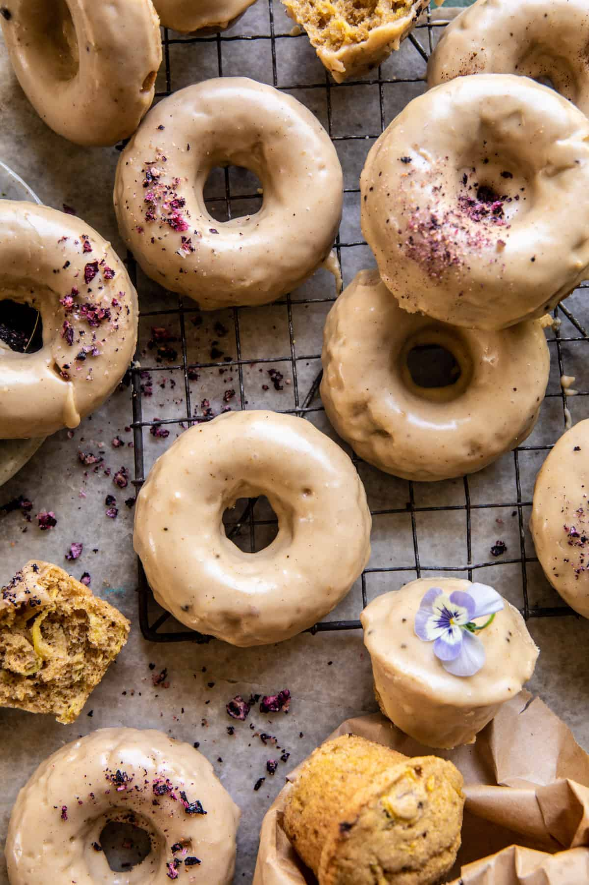

Zucchini Doughnuts with Cinnamon Maple Glaze

Sweet baked Zucchini Doughnuts with Cinnamon Maple Glaze
Sweet baked Zucchini Doughnuts with Cinnamon Maple Glaze. Made with
shredded zucchini, whole wheat flour, cinnamon, and just a pinch of
ginger. Then baked and dipped in a sweet brown butter glaze flavored with
coffee and cinnamon. There’s really nothing not to love about these cute
summery spiced doughnuts. The perfect way to use that summer zucchini!
Ingredients
-
2 medium zucchini, grated (about 1 1/2 cups grated before squeezing out
water)
- 1/3 cup coconut oil, melted
- 1/2 cup maple syrup
- 2 teaspoons vanilla extract
- 2 large eggs
- 1 1/2 cups whole wheat pastry flour (or all-purpose flour)
- 1 1/2 teaspoons baking powder
- 1 teaspoon ground cinnamon
Steps
-
Preheat the oven to 350° F. Grease a 6-cup doughnut pan or 12-cup muffin
pan with melted butter
-
Lay a clean towel on the counter with the shredded zucchini in the
center, then squeeze out any excess water.
-
In a bowl, stir together the coconut oil, maple syrup, eggs, and vanilla
until combined. Mix in the squeezed-out zucchini. Add the flour, baking
powder, cinnamon, ginger, and salt. Mix until just combined.
-
Divide the batter evenly among the molds, filling 1/2-2/3 of the way
full. Bake for 12 minutes, until just set. Remove and let cool 5
minutes. Then run a knife around the edges to release, and invert the
pan.
-
Meanwhile, make the glaze. Add the butter to a small pot set over medium
heat. Allow the butter to brown slightly until it smells toasted, about
2-3 minutes. Remove from the heat and whisk in the maple syrup, powdered
sugar, instant coffee, and cinnamon. Dip or drizzle the doughnuts into
the glaze. Highly recommend eating a few of these warm!